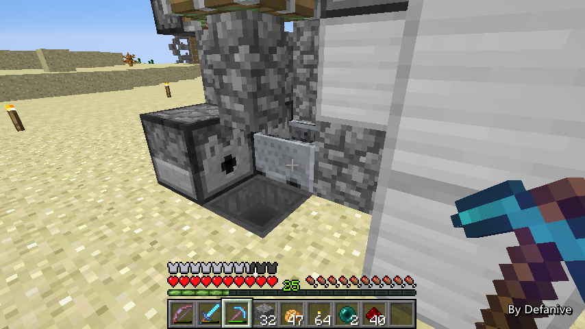

首页
上一页
290
291
292
293
294
295
295
296
297
298
299
300
下一页
末页
defanive2
无尽黑夜
14
当然啦还有一些其他猪人塔的讨论非常有价值
不过今天就直播到这里了
猪人塔仍然是一个非常巨大的工程
不过是在慢慢的稳步推进中
相信很快就可以完成了！
大家下次再见吧！
PS 由于昨天才直播的，大家的回复不多
今天的Q&A环节就留到下次了
——来自 MCLive
29593楼
2014-07-04 22:48
defanive2
无尽黑夜
14
简单看了一下回复，发现有点解释的不清楚大家误会了，主世界刷怪塔和猪人塔所指不同，主世界刷怪塔是指刷僵尸骷髅苦力怕并且有过滤分类的刷怪塔，而猪人塔才是现在进行的工程。在此指明一下，解释的稍微不清晰
29596楼
2014-07-04 23:05
defanive2
无尽黑夜
14
今天终于有时间直播了
那么我们来继续打MC吧！
——来自 MCLive
29707楼
2014-07-09 19:56
defanive2
无尽黑夜
14
最近几天在外旅游就没有把很多时间放在MC上
猪人塔进度比较缓慢，不过浇筑法也已经完成超过一半的挡板浇筑了
PS 隐隐约约可以看到还正在下流的岩浆
——来自 MCLive
29713楼
2014-07-09 20:03
defanive2
无尽黑夜
14
今天要做什么呢
当然是把新火箭发射站给做好啦
已经期待很久的工程了，终于有时间开工了！
——来自 MCLive
29718楼
2014-07-09 20:08
defanive2
无尽黑夜
14
在开始造之前，肯定要把旧的给拆掉
这个工程在1.3的时候就做了，算是很老的工程了
虽然说自从更新以后就再也没有用过
不过一直在家旁边毅力了这么旧
最后拆之前先默哀一下
——来自 MCLive
29723楼
2014-07-09 20:13
defanive2
无尽黑夜
14
拆迁大队工作进行时
——来自 MCLive
29726楼
2014-07-09 20:17
defanive2
无尽黑夜
14
拆得只剩装饰了，回家拿铲子
突然感觉沙漠空缺了什么
——来自 MCLive
29728楼
2014-07-09 20:26
defanive2
无尽黑夜
14
最后一点装饰也拆完，旧的火箭发射站就只剩尸体了。。
不过，旧的不去新的不来
——来自 MCLive
29730楼
2014-07-09 20:28
defanive2
无尽黑夜
14
彻底拆完啦，可以开工了
这次电路打算边做边讲解
PS 看一下效果怎么样
如果讲的不清晰的话以后还是就单独做然后创造讲
——来自 MCLive
29735楼
2014-07-09 20:39
defanive2
无尽黑夜
14
首先是在地上放两个漏斗，以及两个发射器
鼠标所指的漏斗将会是TNT矿车落下的位置
左边的发射器会放上打火机，右边的会放水桶
电路会先激活左边的发射器点火让TNT矿车爆炸
然后右边的发射器会随之喷水，熄灭火并且防止TNT爆炸破坏方块
爆炸后的TNT矿车掉落物会被漏斗吸走
——来自 MCLive
29738楼
2014-07-09 20:42
defanive2
无尽黑夜
14
接下来是位移TNT矿车的两个活塞
TNT矿车会落在右侧的漏斗上
但是要让左侧的火焰能够点燃TNT矿车
就必须让TNT矿车处于两个方块的中间
位移的过程是，左边的活塞先推下，把石栅栏推到TNT矿车旁边
接下来右边的活塞将TNT矿车推向石栅栏
这样就实现了把TNT矿车推到2格中间
PS 不能够使用铁轨进行位移
堆叠起来的TNT矿车一旦在铁轨上位移会立即爆炸
——来自 MCLive
29812楼
2014-07-09 20:49
defanive2
无尽黑夜
14
接下来做装载TNT矿车的部分，由2个粘性活塞和一个发射器组成
首先右边的粘性活塞会先推出一个方块
接下来后方的粘性活塞会推出铁轨
然后发射器会开始不断喷射出TNT矿车在铁轨上
喷射完毕后，电路逆序执行
后方的活塞先收回，右侧的活塞再收回
TNT矿车就会顺势掉落到下面的漏斗处
然后就执行上一楼所讲的TNT矿车位移到中间
PS 网络成功爆炸 = =
——来自 MCLive
29862楼
2014-07-09 21:14
defanive2
无尽黑夜
14
接下来可以开始建一下外框了
发射器这一格作为外支柱往上延伸
然后做楼梯到发射器上面一格
接下来用陷阱门作为玩家的起飞点
注意，陷阱门需要贴左边的墙，以防止TNT矿车爆炸强度太高
——来自 MCLive
29863楼
2014-07-09 21:16
defanive2
无尽黑夜
14
看起来不是很清楚，就换成铁块了
从正面看就是这样的
右边的拉杆是装弹的总拉杆
拉杆要实现以下功能：
1、打开拉杆时，控制两个活塞分别推出方块和铁轨
2、开始循环脉冲给到发射器，发射器发出TNT矿车
3、关闭拉杆时，关闭发射器的脉冲，不再进行TNT矿车发射
4、推出方块和铁轨的活塞分别按正确顺序收回
5、待TNT矿车落下后，最下面的两个活塞位移TNT矿车
那么接下来的电路就要实现以上的功能啦
——来自 MCLive
29864楼
2014-07-09 21:20
defanive2
无尽黑夜
14
我们首先进行功能1，在打开拉杆时控制两个活塞推出方块和铁轨
那么我们就需要让方块先推出，铁轨后推出
我们先把信号经过2t的中继器延时后
给到后方推铁轨的活塞
——来自 MCLive
29868楼
2014-07-09 21:26
defanive2
无尽黑夜
14
接下来我们把信号同时给到1tick和3tick的中继器上并做或门
信号会在1tick延迟后亮起，3tick延迟后熄灭
这样就做到了在打开拉杆的时候
推方块的活塞会在1tick后先推出，推铁轨的活塞会在2tick后推出
在关闭拉杆的时候，推铁轨的活塞会在2tick后收回
而推方块的活塞会在3tick后收回
也就同时实现了功能1和4
——来自 MCLive
29871楼
2014-07-09 21:30
defanive2
无尽黑夜
14
不过要注意，我们的活塞是以BUD的方式激活的
因此我们需要一个动力铁轨提供更新
否则活塞不会正确运行
这样功能1和4的电路就做好了
——来自 MCLive
29872楼
2014-07-09 21:31
defanive2
无尽黑夜
14
在打开拉杆时，可以看到右边的活塞先推出方块
后方的活塞再推出铁轨
而在关闭拉杆时，则逆序执行
后方的活塞先收回铁轨，右边的活塞再收回方块
功能1和4的电路就完成了
——来自 MCLive
29873楼
2014-07-09 21:32
defanive2
无尽黑夜
14
接下来做功能2，在打开拉杆铁轨到位后
给予发射器脉冲进行装载TNT矿车
这部分的电路应该挺简单的
在给到后方活塞的电路延伸出来
给到一个比较器脉冲上
——来自 MCLive
29877楼
2014-07-09 21:36
defanive2
无尽黑夜
14
接下来比较器脉冲的信号给到发射器即可
功能2就这样完成了
——来自 MCLive
29879楼
2014-07-09 21:38
defanive2
无尽黑夜
14
电路完成之后，我们可以在发射器里面放入9个矿车测试一下
（建议不要用TNT矿车做测试，电路出错了就麻烦了）
可以看到铁轨被正确推出之后，9个矿车都被发射到了铁轨上
——来自 MCLive
29880楼
2014-07-09 21:41
defanive2
无尽黑夜
14
在拉杆关闭后，活塞正确收回铁轨
9个堆叠的矿车下落到漏斗上
这样电路就工作正常了
功能2也就完成了
——来自 MCLive

29884楼
2014-07-09 21:42
defanive2
无尽黑夜
14
功能1 2 3 4都完成之后，我们就要做功能5了
功能5就是在拉杆关闭，铁轨收回，矿车落下后
两个活塞把矿车推到2个漏斗的中间
——来自 MCLive
29886楼
2014-07-09 21:44
defanive2
无尽黑夜
14
首先在给到后方的活塞的信号后面做出一个下边缘检测器
这个电路之前已经介绍过了，通过中继器锁死的功能
只有在电路信号从ON->OFF时才会输出一个信号
——来自 MCLive
29889楼
2014-07-09 21:47
defanive2
无尽黑夜
14
接下来把信号经过4tick的延迟后给到侧推的活塞上
——来自 MCLive
29891楼
2014-07-09 21:48
defanive2
无尽黑夜
14
下边缘检测器的信号经过2tick的中继器之后
给到推石栅栏的活塞上
——来自 MCLive
29893楼
2014-07-09 21:50
defanive2
无尽黑夜
14
如果现在测试电路的话，1-4正确执行完之后
关闭拉杆后矿车落下
接下来推石栅栏的活塞经过2tick后推下来
然后右侧的活塞经过4tick后把矿车推向了石栅栏
接下来2个活塞都会收回
这样就实现了把矿车位移到中心
——来自 MCLive
29895楼
2014-07-09 21:52
defanive2
无尽黑夜
14
拉杆的整个电路就完成啦！
一步一步跟着看的话，整个电路应该不会很难理解
简单的时序处理而已
接下来我们就可以做发射的电路了
——来自 MCLive
29897楼
2014-07-09 21:54
defanive2
无尽黑夜
14
接下来我们在发射舱往上建3格
第三格的左侧上放一个按钮
这个按钮为发射按钮
玩家在进入发射舱之后，调整好站位
点击按钮就会发射
——来自 MCLive
29898楼
2014-07-09 21:57
首页
上一页
290
291
292
293
294
295
295
296
297
298
299
300
下一页
末页